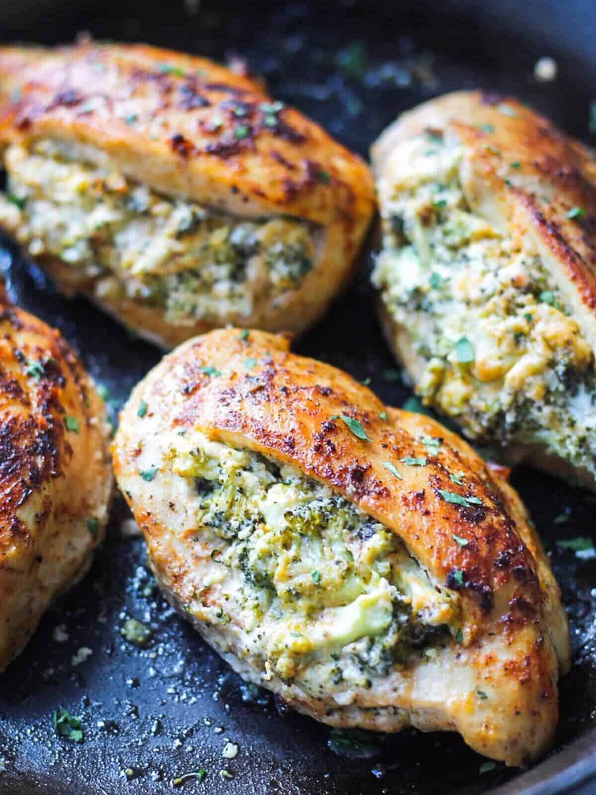

Stuffed Brocolli Chicken

Step-By-Step Guide on making Stuffed Brocolli Chicken
Ingredients
- Chciken Breast
- Brocolli
- Parmasean
- Seasoning of you choice
- Cheese of your choice
- Cream Cheese
Step-By-Step Guide
- Preheat oven to 375
- Combine the salt, pepper, onion powder, garlic powder,
and paprika in a small dish. Drizzle the olive oil over
the chicken breasts. Rub the seasoning mixture on the chicken
and coat entirely.
- Combine the filing ingredients in a bowl. Set aside.
- Cut out a wide pocket in each chicken breast, being careful not to cut all the way
- Stuff each chicken breast with the filing
- Heat 2 tablespoons of olive oil in a large oven-safe skillet over
medium-high heat. once heated, sear the stuffed chicken breasts on each side,
but dont't cook through. You may need to do this in two
batches depending on the size of your chiken breasts.
Place all 4 breasts in the skillet and transfer the skillet to the oven.
- Bake for 25-35 minutes until the chiken breasts are cooked through